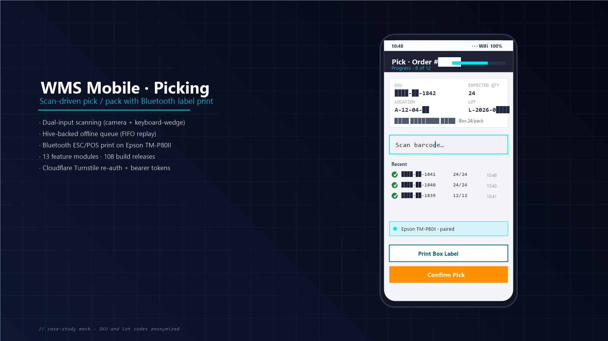

WMS Mobile App
Hardware-integrated Warehouse Management on Flutter
A Flutter mobile app paired with an existing Nuxt admin and Laravel REST API to run an enterprise logistics operator’s warehouse floor — scan-driven receiving, picking, dispatch, validation, count-sheets, and stock movement, with Bluetooth ESC/POS label printing on Epson TM-P80II and offline-first sync over flaky warehouse Wi-Fi.
What it is
A Flutter mobile app that replaces paper-based and laptop-bound warehouse operations with a single device a forwarder/picker carries on the floor. 13 feature modules — receiving, picking (three variants: base, enhanced, v3), dispatch, validator, count-sheets, stock movement, audit trail — all syncing to a Laravel REST API that fronts ~250 Eloquent models and ~315 migrations.
Talks Bluetooth ESC/POS to Epson TM-P80II thermal printers, supports both camera scanning (mobile_scanner) and hardware keyboard-wedge scanners (Zebra / Honeywell), and pairs with the existing Nuxt admin UI. Built in-house, pair-programmed with Claude Code throughout — 108 build releases shipped to date.
The bottleneck
Before the mobile app, the warehouse workflows lived on a mix of desktop browser sessions, printed picklists, and manual XLSX exports. That created several friction points:
- Pickers had to walk back and forth between the floor and a fixed workstation to confirm each step.
- Stock counts drifted through the day because updates lagged behind physical movement.
- Receiving inbound shipments required cross-referencing paper documents against the SAP-bridged WMS records.
- The existing web UI wasn't built for one-handed, on-the-go use on a phone or rugged scanner-device.
The asks from operations: scan + confirm in <3 seconds, work even with shaky warehouse Wi-Fi, and keep parity with the existing web WMS as the source of truth.
How I broke it down
- Flutter for a single codebase — Android-first for the rugged warehouse devices, with iOS parity available for ops managers.
- Laravel REST API as the single source of truth — the mobile app uses the same endpoints as the existing Nuxt web admin. No separate “mobile backend”, no divergent business rules.
- Feature-module architecture —
lib/features/{auth, scanning, picking, picking_enhanced, picking_v3, dispatch, validator, stock_movement, countsheet, audit_trail, audit_logs, home, splash}/. Each module owns its controllers, models, screens, services. - Dual-input scanning abstraction — the same screens accept
scans from either the device camera (
mobile_scanner) or a hardware scanner in keyboard-wedge mode. Operators on rugged Zebra/Honeywell devices and operators on plain Android phones get the same UX. - Offline-first reads + write-through queue — cached lookups in Hive for SKUs, locations, recent transactions. Every scan/confirm/print is enqueued locally and replayed FIFO on reconnect.
- Bluetooth ESC/POS printing — integrated
bluetooth_print_plusto drive Epson TM-P80II thermal printers directly from the picker’s phone for box-label print-on-pick. - Cloudflare Turnstile re-auth — CAPTCHA-gated session renewal to keep operators logged in safely without exposing the API to credential-stuffing.
- AI-assisted velocity — pair-programmed every commit with Claude Code. Used it heavily for widget-tree scaffolds, controller refactors, test fixtures, and the backend bug-investigation cycle. Human review + engineering judgment stayed in the loop on every PR.
What I built
Core mobile flows shipped:
- Receiving — scan inbound shipments against SAP-bridged documents, with line-item validation, discrepancy capture, and auto-print box labels via Bluetooth.
- Picking — three generations: base, Enhanced (Quick-Pick mode for high-velocity pickers), and v3 (current; lessons learned from the first two). The same Laravel endpoints, different operator UX.
- Dispatch — shipment verification before the truck leaves, with serial-level confirmation.
- Validator — pre-dispatch validation pass that catches mis-picks before they hit the truck.
- Count Sheet — on-floor cycle counts with master-vs-serial reconciliation.
- Stock Movement — bin-to-bin transfers with audit trails and serial tracking.
- Audit Trail — per-operator activity log surfaced inside the app for self-review.
- Bluetooth ESC/POS printing — one-tap box-label printing from a picker’s phone to an Epson TM-P80II clipped to their belt.
The companion web admin (Nuxt + CoreUI) keeps its existing role — dashboards, reports, master data, and customer-specific portals for the largest tenants (under NDA). The mobile app intentionally does not duplicate those screens; it owns the scan-driven floor operations.

API contract example — every scan posts a confirm event the server validates against current stock and inbound documents:
// POST /api/wms/pick/confirm Route::post('/pick/confirm', function (Request $req) { $validated = $req->validate([ 'order_id' => 'required|exists:orders,id', 'sku' => 'required|string', 'qty' => 'required|integer|min:1', 'location' => 'required|string', 'device_id' => 'required|string', ]); return PickService::confirm($validated); });
Offline queue (Flutter side) — every action is recorded locally and replayed automatically when connectivity returns:
// Hive-backed retry queue, replays in FIFO order class SyncQueue { final Box<QueuedOp> _box; Future<void> enqueue(QueuedOp op) async { await _box.add(op); if (await Connectivity().checkConnectivity() != ConnectivityResult.none) { await drain(); } } Future<void> drain() async { /* … */ } }
Tech
- Mobile: Flutter SDK 3.x / Dart, Hive (offline KV store), Connectivity Plus, mobile_scanner, dio + http, bluetooth_print_plus (ESC/POS), cloudflare_turnstile (re-auth), shared_preferences, permission_handler, flutter_dotenv, package_info_plus, intl, logger.
- Web companion: Nuxt.js (CoreUI Free Admin template), Vue, SCSS — for dashboards, reports, master data, customer portals.
- Backend: Laravel + MySQL, Sanctum personal-access tokens,
REST (JSON) responses in
{ status, data, message }shape. Python helpers for select integrations. Nginx + Procfile-based deploy. - Hardware: Epson TM-P80II thermal printers over Bluetooth; Zebra / Honeywell barcode scanners in keyboard-wedge mode; rugged Android devices as the primary picker hardware.
- Integrations: SAP-bridged inbound documents (XML / SFTP), large-customer-specific portals (under NDA), companion Nuxt admin, audit-log streams.
- Tooling: VS Code · Claude Code · Postman · Git · GitHub Actions.
- Distribution: internal signed APK with an in-app OTA-update
flow gated by
API_BASE_URL— pickers see an “update available” banner without going through the Play Store. - Codebase scale: ~251 Eloquent models · ~103 controllers · ~315 migrations on the API; 13 feature modules on mobile.
Results
The app went from concept to production in active rollout, with 108 build
releases shipped to operators as flows hardened. Picker workflows were
iterated three times (picking → picking_enhanced
→ picking_v3) based on real floor feedback. Bluetooth label
printing eliminated the trip back to a workstation between picks for high-velocity
lanes.
Specific business figures (pick-time, error rate, end-of-day reconciliation effort, onboarding time for new operators) stay with the operations team; happy to share what we’re seeing in detail on request.
What I’d do again — and differently
Worked well:
- Same REST API as the source of truth. The mobile app calls the exact endpoints the Nuxt web admin calls. No divergent “mobile DTOs”, no parallel business rules to drift over time.
- Feature-module folder layout. Each module
(
features/picking/,features/dispatch/, …) owns its own controllers, models, screens, services. Easy to onboard new modules without touching shared core. - Offline-first writes with a replay queue. Warehouse Wi-Fi will drop; the question is how gracefully you handle it. Hive-backed FIFO queue meant operators never lost a confirm.
- Hardware abstraction over scanner input. The same screens accept camera scans or hardware keyboard-wedge input. One UX, two device classes — no code fork.
- AI-assisted iteration. Pair-programmed with Claude Code through every commit — widget scaffolds, controller refactors, race-condition chase-downs (e.g. the picking observer race), backend log-format alignment.
Would tighten:
- Extract picking earlier. Three picker generations
(
picking,picking_enhanced,picking_v3) means the shared core grew implicitly across versions. A clean shared abstraction in v1 would have made v2/v3 cheaper. - Lock in an automated test suite earlier. The offline-queue replay path has subtle edge cases (concurrent enqueue + drain, partial-batch failure, retry on auth-refresh) that only production traffic surfaced. Tests for those after-the-fact were expensive.
- Bluetooth pairing UX is a feature. The first version assumed the printer was already paired at the OS level; in practice operators rotate printers. Surfacing pairing status, signal strength, and a one-tap re-pair flow in v2 cut support tickets significantly.
- WebView platform pre-init. Cloudflare Turnstile (which mounts
a WebView) raced plugin registration on cold start — manifested as a
cryptic pigeon channel-error. Promoting
webview_flutter_androidfrom transitive to direct + eager-init inmain.dartfixed it. Worth doing upfront on any Turnstile-gated Flutter app. - Smaller-cohort rollouts. Introduce big flow changes to one zone or shift first, gather feedback for a week, then expand. The few times a broad rollout went out with a regression hurt more than the few times a slower rollout took longer.